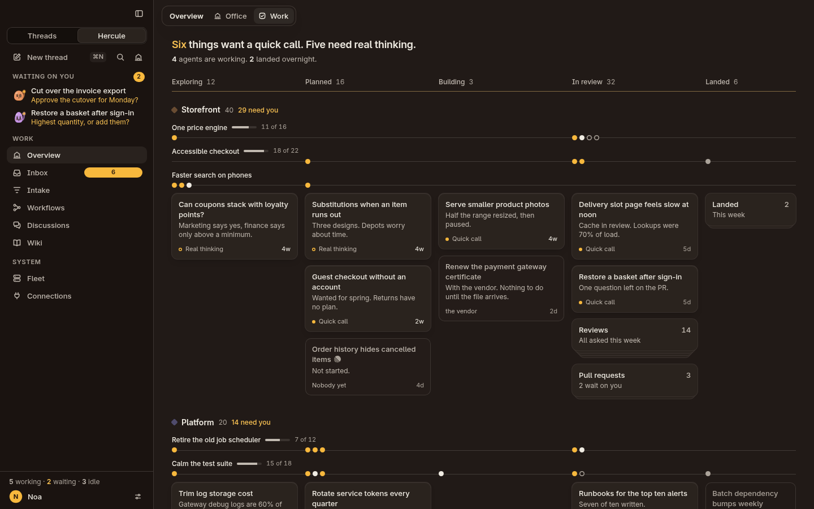
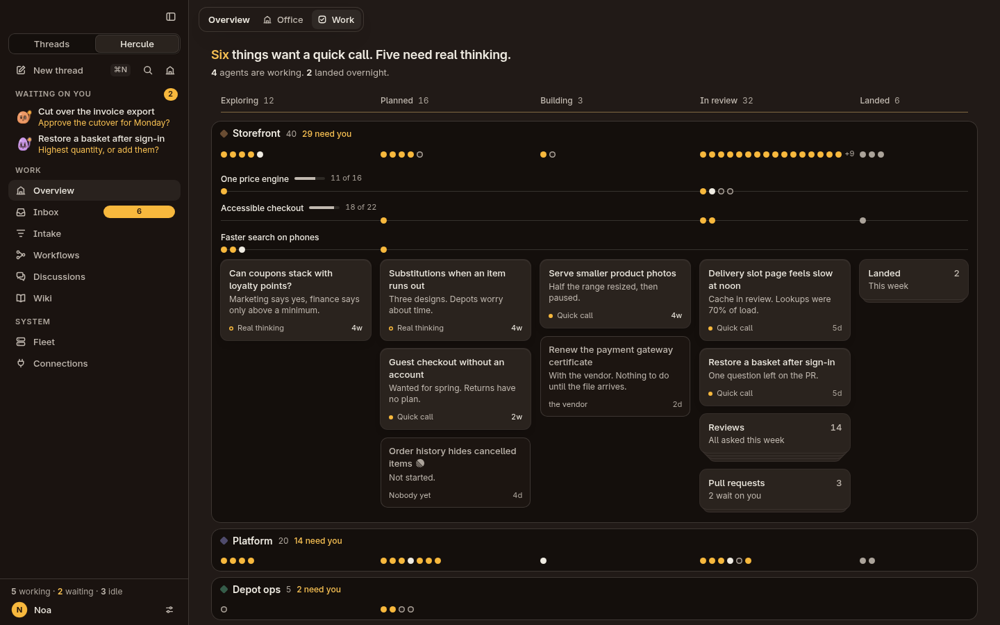
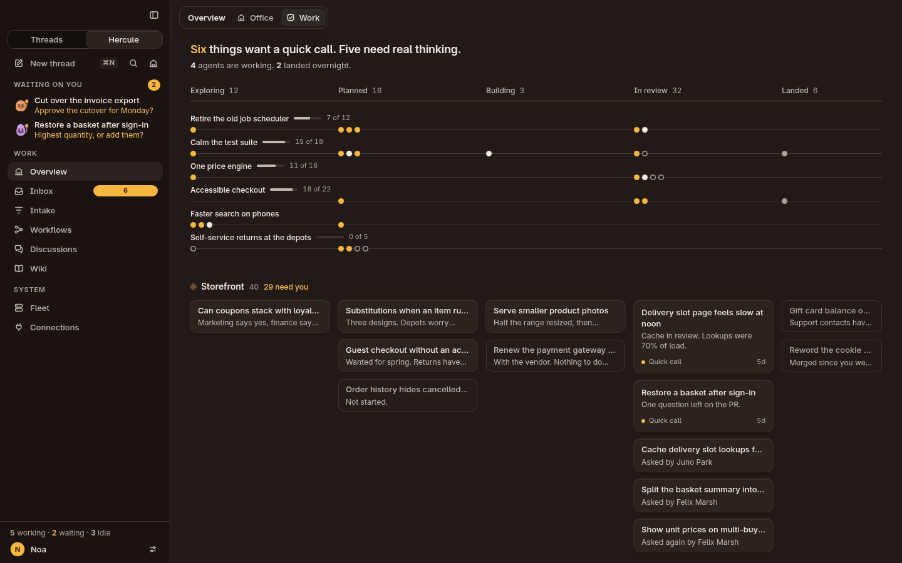
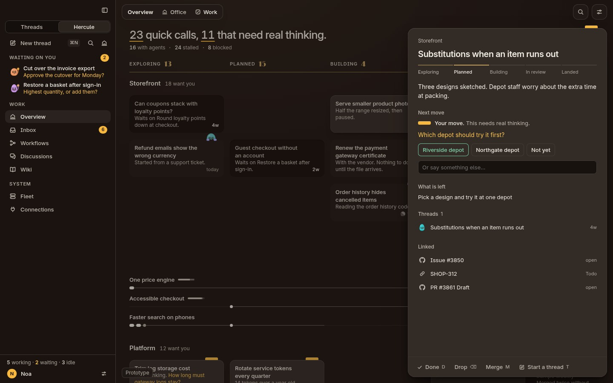
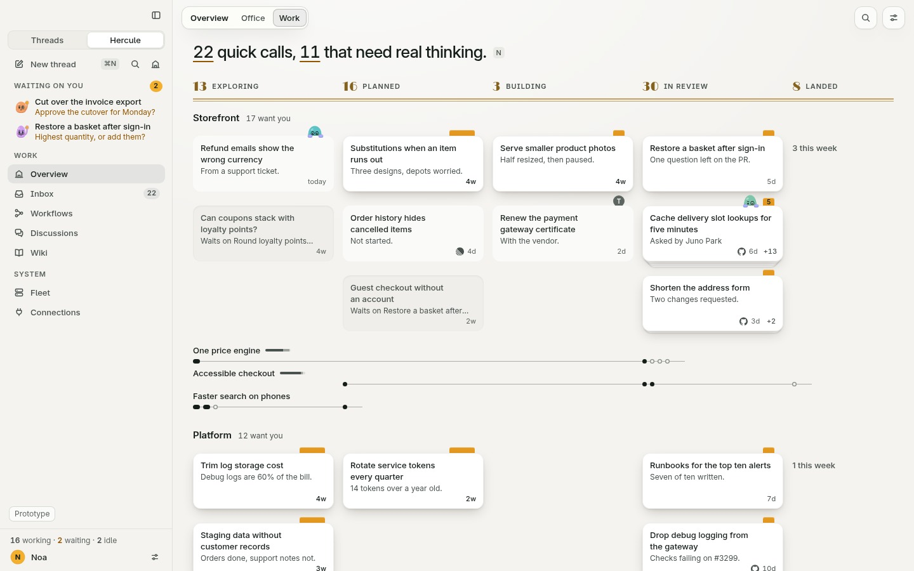
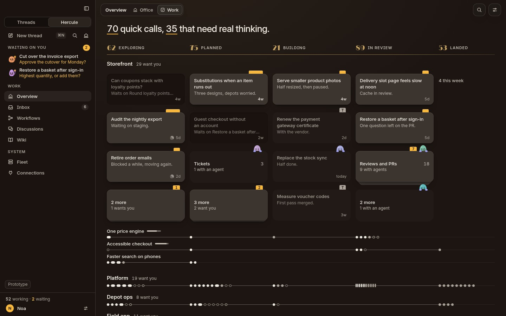
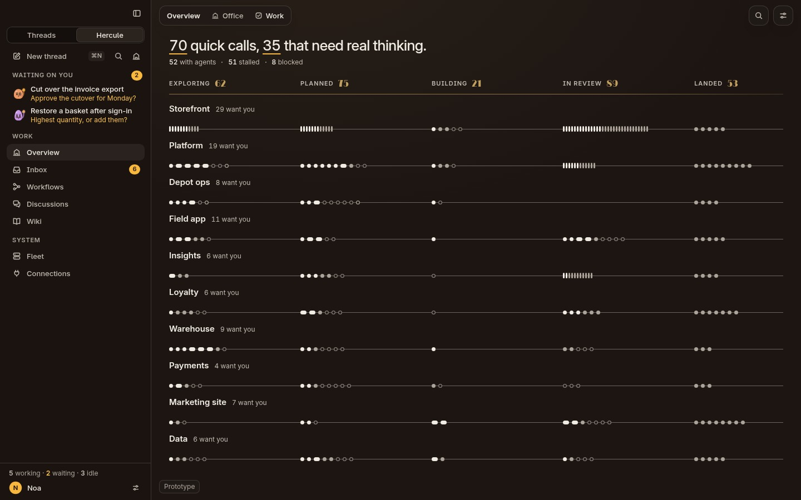
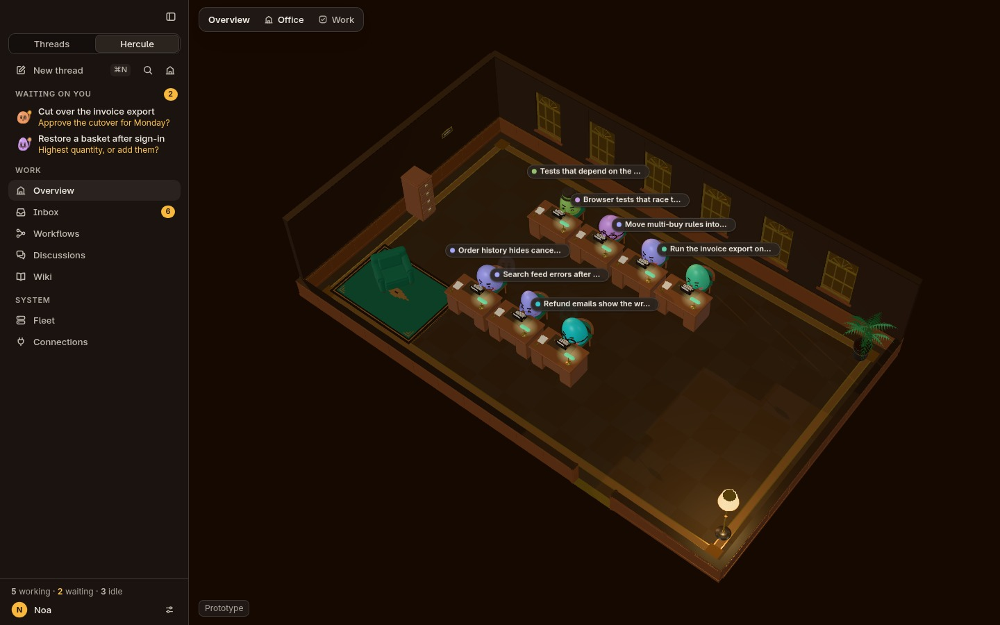
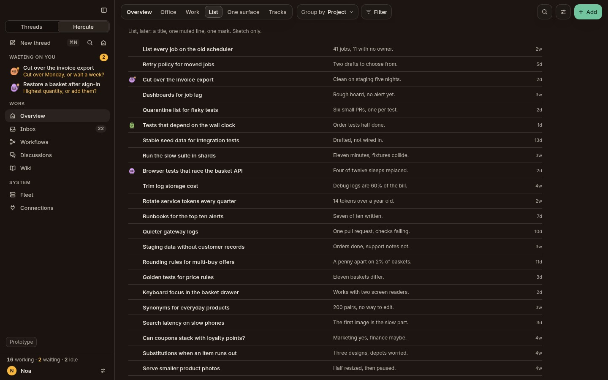
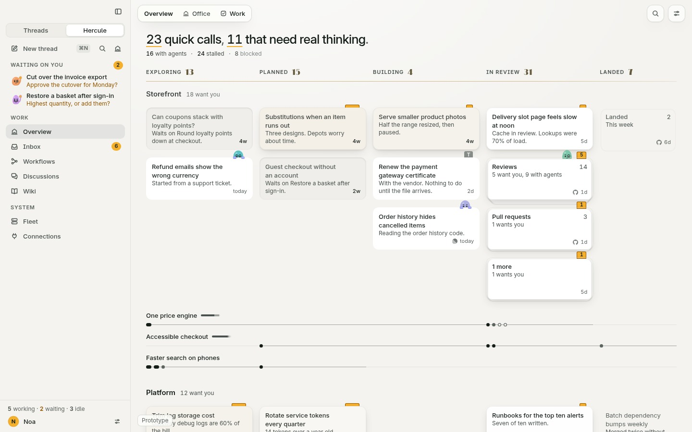

Hi-fi design · Overview and Work
The desk you open every morning.
A place to see all your work, as proper cards, where what wants you stands up and everything else lies down. Six minutes to read. Everything below is live: click, drag and press keys inside any frame.
What it is
Stages are columns. Projects are lanes. Most Tasks are plain cards, and plans run under them as thin wires. That structure is your Home from the lo-fi, which you called a good default. What changed is how it looks, how it feels, and how it stays quiet.
Everything on the page answers one of three questions, in this order: what wants me, where does it stand, what is everyone else doing.
Three compositions, and why this one
I drew three real sketches on the same 69 Tasks before building anything.



The design is A's ground, with B's beads for what you ask to fold. Every lane opens, one row each, so a morning starts with proper cards, and a horizontal line means one thing: a plan.
A card says a lot without words
Two things are new, and both work before you read a word. The words are few on purpose: a title, about six words on where it stands, and an age.
Height means whose move it is. A card that wants you stands up off the desk. A card someone else holds lies flat. A blocked card is pressed in. A landed card is only an outline. Nothing else on the page has a shadow, so the eye goes to what stands.
The top edge shows who holds it. Card files in the 1930s used small metal signal tabs clipped to the top edge, so a clerk could read a whole drawer at a glance. Here a marigold tab means it is your move: short for a quick call, long for real thinking, with a number when more than one thing there wants you. A colleague's head peeks over the edge, paws typing on the card, when an agent has it. A round monogram is a person. Nothing means nobody.
All cards are one height, and there is no footer: the tab or the head already says who holds it, so the words go to the summary. A new summary can never push a neighbour. Things stay where they are.
On approach the card says what it wants. Rest the pointer on a card and its summary turns into its question, with no layout change.
The sentence is the filter
There is no filter bar. The first line counts what wants you, and each phrase in it is a lens. Hover "real thinking" and exactly those cards stay lit. Press it to keep it. Press Q, R, S or A from anywhere. Under a lens, a matching card comes to the top of its stack, so a lens never lights an empty row.
Then press N, or the small keycap at the end of the sentence. The details open on the first thing that wants you, and N walks to the next, through piles and folded lanes too, with "4 of 33" at the top. Answer, and it moves on. That is the morning: read, answer, next. A lens narrows the walk.
Plans are wires, and beads are Tasks
A plan is a thin wire under its project's cards, from its first bead to just past its last, with a bead per piece of work at its stage. You read its shape at a glance, like an abacus, and a small bullet graph says how far along it is. Click its name and the wire opens: each bead grows into its card, in place, in a band. Fold it and the cards shrink back into their beads. Most Tasks have no plan, and nothing about the page apologises for that.
Beads are real objects. Rest on one to see what it is. Drag one along its wire to change its stage. Drop a card on a folded lane and it shrinks into a bead there.
Dragging is the star
A press dents the card a little. Past five pixels it lifts: it grows, its shadow deepens on the same spring, and from then on it is exactly under your finger, at any speed. A slot opens where it would land, everything below moves aside, and a brass diamond runs along the stage rule to show the stage it will join. Let go and it comes down from where it is, keeping the speed of your hand. Press Esc and it goes home, without bounce.
Merging is the same gesture, held still. Hold a card still on the middle of another for a second, or hold Option, and they are drawn together: the one in your hand docks on the corner of the other, the target opens up, and letting go merges them. Undo plays it backwards.
Done gets the best landing: the card shrinks into its own number in the sentence, and the number rolls down. The sentence getting shorter is the reward.
Every action has a key. Arrows walk the desk. Return opens. Shift and an arrow moves a card a stage. M merges. X selects, and dragging any selected card carries them all as a stack.
A card opens into its details
The sheet you clicked is the sheet that grows. Its top edge, and whoever stands behind it, ride along. The board stays where it is, and the card's old place stays open as a dent, so your eye knows where it goes back to. Open and close are one spring, so Esc halfway through just reverses.

Alive, but never restless
Facts arrive all day, and the board must never reshuffle what you are looking at. Four rules keep it calm:
- Nothing moves under your hand. A pointer resting on a thing means someone is reading it. A change waits for it to leave, for at most eight seconds.
- Cause first. "PR #3331 merged" lands on the card before it moves.
- Slowly. Things that move by themselves are slower than things you move.
- A dent stays. A card that leaves keeps its place open for a moment, so the cards below do not jump.
The first ten seconds of the morning are a replay of the night, so nothing teleports even while you were asleep. The same thing, in the same place, or you saw it move.
Rows at rest, and stacks
At rest a lane shows one row, or two when ten or more of its Tasks want you. Per stage, real cards lie on top: what wants you first, then what an agent holds. What lies behind shows as sheets under the last card, with +3 beside the age. Its tab counts everything there that wants you, and a head beside it says agents are on it. Click +3, or the sheets themselves, which part as you come near, and it fans out. Click the lane's name and you get more rows, the cards coming out from under the last one.
A dropped card lands on the row you chose, and nothing moves. Lift a card and the next one is already there underneath. A lane at rest never changes height, whatever happens.

Calm at 300 cards
Ten lanes at rest is the same page, only longer: every project still shows proper cards. A lane showing all its rows folds streams into piles, and a pile keeps its place for the whole visit, so a card leaving can never rebuild a column. When you want the whole picture, Shift F folds everything into a score: ten projects on one screen as lines of beads, with tally marks where it is dense. That view is something you ask for, never the default.


The Overview: Office and Work side by side
The Office stays exactly as it is. A puck slides in the switcher, and the change of view carries the one thing the two views share: the colleagues. Switch from Work to the Office and each head on a card leaves it and walks into the room. Switch back and they return to their cards. It says what the two views are: the same crew, seen two ways.
The Office itself is untouched, and it loads only when you ask for it: the kit starts loading when the pointer reaches the tab.
The switcher draws Office and Work today. List, One surface and Tracks slot in beside them, in the same pill, with no change of design. The tray at the bottom right can show them at sketch level.


Every state, drawn
Wear
An optional switch, off by default, in the Display menu. Neglected work ages gracefully: its paper yellows and its ink fades a little, as if nobody has touched it. Move it and it is new again. It is a way to feel neglect rather than read a number.

What is new in the design system
- The desk (
--desk), and heights: standing, flat, pressed, etched, as meaning, not decoration. - The top edge: signal tabs, a colleague's head and paws, person tabs.
- Beads and wires, as the folded form of anything.
- Piles, with flags.
- The lens sentence: a page's first line as its filter.
- Words follow height: on a dark desk, what lies lower is written dimmer.
- Deco numerals in readable brass, over a double rule, shared with the Inbox. This changes one doctrine line: brass may be read here, and nowhere else.
- Stacks: a real card with more behind it.
- A dark card material: a warm stock per theme, a lit edge and a sheen, because shadows say little on a near-black desk.
- Three springs, on one clock, in
js/motion.js:hand,travelandself, chosen by who caused the change. - The walk: N through everything that wants you.
What is weakest
Three rounds of harsh critics, a design director's notes, and three more critics after them found a lot, and most of it is fixed. This is what I still doubt.
- The change of view has not been judged at real speed. This machine draws the 3D Office at a few frames a second. The heads walking between cards and room are built and measured for position, but nobody has watched them at full speed. Please look at this first on your Mac.
- It has only been looked at on Linux, at 1x. Motion has been judged from frames, not felt. Font smoothing on a Retina screen will change how the small type feels, and shadows will look finer.
- The six-word summary is a bet. Every summary here is written by hand. The design depends on a cheap model holding that length, and real output may run long.
- Hold-to-merge can still surprise you. It needs a still hand for a full second, the card visibly docks and names its target, Option does it at once, and Undo plays it back. A critic still argued for Option only. I kept the gesture because you asked for it to feel great.
- Half the things that want you are still inside stacks and on wires. On the first screen about 13 cards stand. Two rows for busy lanes helped. Plans stay wires, on purpose. If you want more cards, opening busy plans is one line, and I tried it: it crowded the page.
- A walk can stop on a card hidden behind the sheet. The details cover the right of the board. I do not have a good answer yet.
- Tabs and heads in the light themes are below 3:1 against the desk. An outline fixed the contrast and looked like a sticker, so I took it off. The card also stands, and its accessible name says it all, but it is a known miss.
- Folding everything looks busy for a moment. With many cards in view, the flight to the beads is the least elegant motion here.
- The 300-card world is generated. It proves the structure, not the feel of 300 real things.